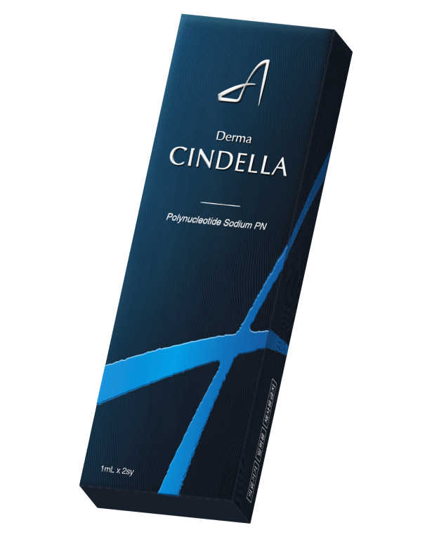

피부,
종이 울리면 더마신델라
“이 제품은 ‘의료기기’이며, ‘사용상의 주의사항’과 ‘사용방법’을 잘 읽고 사용하십시오”
더마신델라는,
연어과 어류의 정소에서 DNA추출후
분해한 PN이 주성분입니다.
01
연어과 어류에서
추출한 PN성분
03
식약처 허가
의료기기
02
눈꼬리 잔주름
개선효과
04
체내에서 일정한
형태를 유지하여
서서히 분해
- 제품명
- 더마신델라
- 주성분
- PN (Polynucleotide Sodium)
- 사용목적
- 성인 눈고리 잔주름을 일시적으로 개선하기 위해 사용
더마신델라는,
대한뉴팜에서 판매하는 PN성분의 의료기기입니다.


FAQ
더마신델라에 대하여 자주 물어보는 질문들
- 시술 후 부작용은 없나요?
-
생체 적합률이 높은 PN을 활용하여 안전하지만 의료전문가와의 상담이 필요합니다.
시술 후 홍반, 엠보 등이 생길 수 있으며, 개인에 따라 정도의 차이가 있을 수 있습니다. - 더마신델라 제품의 주성분은 무엇인가요?
- PN (Polynucleotide) Sodium 입니다.